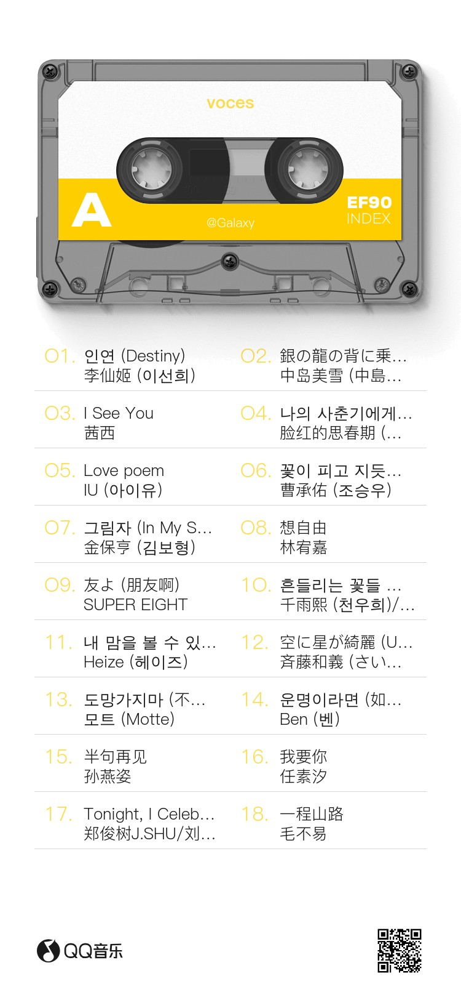
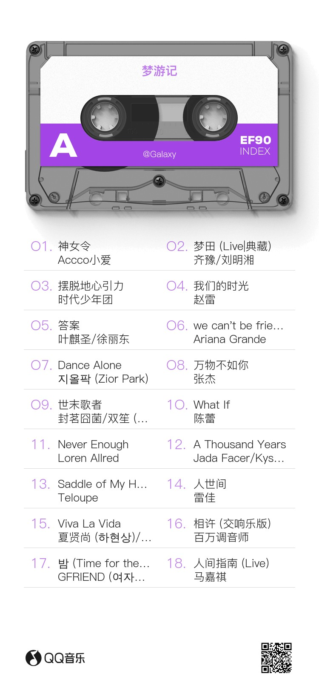

A LITTLE PICNIC OF FEELINGS
Music &
Life
Some songs take you somewhere.
Some take you back.
♫ NOW PLAYING霞光 — 曲锦楠Rosy Glow — Qu Jinnan
MOREEvery fruit holds a feeling.
Begin with the fruit you like.
01 / STRAWBERRY / LOVE
How long will
I love you
JON BODEN, SAM SWEENEY & BEN COLEMAN
WORDS TO KEEP
How long will I love you?
As long as stars are above you
And longer if I can
How long will I need you?
As long as the seasons need to
Follow their plan
How long will I be with you?
As long as the sea is bound to
Wash upon the sand
How long will I want you?
As long as you want me to
And longer by far
How long will I hold you?
As long as your father told you
As long as you are
How long will I give to you?
As long as I live through you
However long you say
How long will I love you?
As long as stars are above you
And longer if I may
♫ NOW PLAYING生活倒影 — 苏运莹Reflection of Life — Su Yunying


For more playlists,
scan the QR codes below.